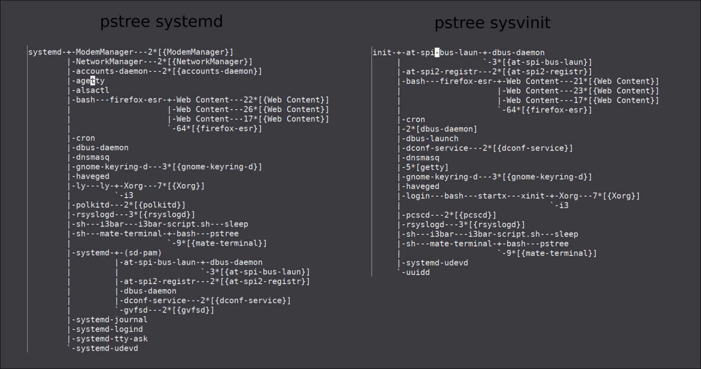

Escapar de systemd: Creando nuestra propia iso kali-i3-viel.
Table of contents
Por que escapar de systemd
Porque quiero iniciar mi systema de manera kiss, usando lo mínimo necesario para que funcione bien y rápido.
En la mayoría de distros linux vienen activadas por defecto muchas cosas que no se acaban utilizando y usan recursos. Por suerte linux permite configurar el sistema a gusto bajo un control completo, pero … que pasa si quiero hacerme mi propio sistema de inicio?
Systemd es cada vez mas complicado, es un binario y cambiar cualquier cosa que no este predefinida implica cambiar el código fuente, compilar y probar. Los archivos de servicios unit de systemd son específicos solo para systemd, no son scripts que puedan funcionar sin systemd. Cada vez hacen mas aplicaciones dependiente de systemd como netctl de arch linux.
No sigue la filosofía Unix, haz una cosa y hazla bien. Tampoco sigue mi filosofía KISS, hazlo simple. No tiene sentido hacer las cosas cada vez mas grandes con mas funcionalidades … al final tendremos un programa (systemd) que lo hará todo, logs, control de usuarios, X, gestión de archivos, edición de vídeo, no necesitaremos nada mas pero … No entraré en un debate ni daré una charla sobre si es bueno o no depender solo de un sistema, un programa, etc. cada uno que busque, compare y elija.
Comparando systemas de inicio

Por que sysV-init
Después de indagar un poco sobre openrc, y sin que ningún sistema de inicio me acabe de convencer del todo, usaré SysVinit porque es el primero, está probado extensamente, es simple de entender y podemos reutilizar los scritps si queremos crear nuestro propio sistema de inicio.
Cada uno tendrá su sistema de inicio preferido, esta es la ventaja de usar software libre que tenemos varias opciones y si no nos gustan podemos hacerlo nosotros. Cada sistema de inicio tiene sus dependencias, ventajas e inconvenientes.
Removiendo systemd
Partimos de una kali-mate-desktop donde instalé i3 y ajusté varias teclas y accesos rápidos a aplicaciones de mate, como mate-screenshoot. Para remplazar systemd con sysV-init seguiré este enlace pero no añadiré los repositorios de devuan porque kali tiene sysV-init en sus repositorios.
Verificando que sysvinit esta en los repositorios
root@kali:~/live-build-config# apt-cache search sysvinit
acct - GNU Accounting utilities for process and login accounting
dumb-init - wrapper script which proxies signals to a child
git-daemon-run - fast, scalable, distributed revision control system (git-daemon service)
git-daemon-sysvinit - fast, scalable, distributed revision control system (git-daemon service)
init-system-helpers - helper tools for all init systems
live-config-sysvinit - Live System Configuration Components (sysvinit backend)
systemd-sysv - system and service manager - SysV links
sysvinit-core - System-V-like init utilities
sysvinit-utils - System-V-like utilities
root@kali:~/live-build-config#
Instalando sysvinit vemos como nos quita algunos paquetes que dependen de systed.
root@kali:~# apt install sysvinit-core sysvinit-utils
Leyendo lista de paquetes... Hecho
Creando árbol de dependencias
Leyendo la información de estado... Hecho
Los paquetes indicados a continuación se instalaron de forma automática y ya no son necesarios.
accountsservice caja-common engrampa engrampa-common eom eom-common exfat-fuse exfat-utils ffmpegthumbnailer fonts-cantarell gir1.2-eom-1.0
gir1.2-matemenu-2.0 gvfs-common gvfs-libs libaccountsservice0 libappstream4 libatasmart4 libayatana-appindicator3-1 libayatana-ido3-0.4-0
libayatana-indicator3-7 libblockdev-crypto2 libblockdev-fs2 libblockdev-loop2 libblockdev-part-err2 libblockdev-part2 libblockdev-swap2 libblockdev-utils2
libblockdev2 libcpufreq0 libdbusmenu-glib4 libdbusmenu-gtk3-4 libexempi8 libffmpegthumbnailer4v5 libgdata-common libgdata22 libgoa-1.0-0b
libgoa-1.0-common libgphoto2-6 libgphoto2-l10n libgphoto2-port12 libgtkmm-3.0-1v5 libgucharmap-2-90-7 libindicator3-7 liblightdm-gobject-1-0
libmate-desktop-2-17 libmate-menu2 libmate-panel-applet-4-1 libmate-slab0 libmate-window-settings1 libmatedict6 libmatekbd-common libmatekbd4
libmatemixer-common libmatemixer0 libmateweather-common libmateweather1 libndp0 libnfs12 libnma0 liboauth0 librda-common librda0 libstemmer0d libteamdctl0
libudisks2-0 libvolume-key1 libxklavier16 lightdm-gtk-greeter mate-applets-common mate-backgrounds mate-calc mate-calc-common mate-control-center-common
mate-desktop mate-icon-theme mate-media mate-media-common mate-menus mate-panel-common mate-polkit-common mate-power-manager-common mate-screensaver
mate-screensaver-common mate-settings-daemon-common mate-system-monitor mate-system-monitor-common mate-themes mate-user-guide mate-utils
mate-utils-common menu menu-xdg mobile-broadband-provider-info
Utilice «apt autoremove» para eliminarlos.
Se instalarán los siguientes paquetes adicionales:
caja-common gvfs-libs initscripts insserv libmate-panel-applet-4-1 libmate-slab0 libmate-window-settings1 libnm0 libnss-systemd libsystemd0
mate-applets-common mate-control-center-common mate-panel-common mate-power-manager-common startpar systemd sysv-rc
Paquetes sugeridos:
bootchart2 systemd-container policykit-1 bootlogd
Paquetes recomendados:
libpam-systemd
Los siguientes paquetes se ELIMINARÁN:
caja dbus-user-session ettercap-graphical gvfs gvfs-backends gvfs-daemons kali-desktop-core kali-desktop-i3 kali-desktop-mate libpam-systemd lightdm
mate-applet-brisk-menu mate-applets mate-control-center mate-desktop-environment mate-desktop-environment-core mate-panel mate-polkit mate-power-manager
mate-settings-daemon network-manager network-manager-gnome packagekit packagekit-tools policykit-1 systemd-sysv udisks2
Se instalarán los siguientes paquetes NUEVOS:
initscripts insserv startpar sysv-rc sysvinit-core
Se actualizarán los siguientes paquetes:
caja-common gvfs-libs libmate-panel-applet-4-1 libmate-slab0 libmate-window-settings1 libnm0 libnss-systemd libsystemd0 mate-applets-common
mate-control-center-common mate-panel-common mate-power-manager-common systemd sysvinit-utils
14 actualizados, 5 nuevos se instalarán, 27 para eliminar y 667 no actualizados.
Se necesita descargar 19,9 MB de archivos.
Se liberarán 36,1 MB después de esta operación.
¿Desea continuar? [S/n]
---skipped---
Desinstalando systemd-sysv (241-7) ...
Seleccionando el paquete sysvinit-core previamente no seleccionado.
(Leyendo la base de datos ... 535426 ficheros o directorios instalados actualmente.)
Preparando para desempaquetar .../sysvinit-core_2.96-1_amd64.deb ...
Desempaquetando sysvinit-core (2.96-1) ...
Preparando para desempaquetar .../libnss-systemd_242-8_amd64.deb ...
Desempaquetando libnss-systemd:amd64 (242-8) sobre (241-7) ...
Preparando para desempaquetar .../systemd_242-8_amd64.deb ...
Desempaquetando systemd (242-8) sobre (241-7) ...
Preparando para desempaquetar .../libsystemd0_242-8_amd64.deb ...
Desempaquetando libsystemd0:amd64 (242-8) sobre (241-7) ...
Configurando libsystemd0:amd64 (242-8) ...
Progreso: [ 8%] [###########.............................................................................................................................]
Copiando inittab a nuestro etc.
root@kali:~# cp /usr/share/sysvinit/inittab /etc/inittab
root@kali:~#
Reiniciando el ordenador.
reboot
Despues de reiniciar removemos systemd. Nos quita mas paquetes que dependen de el.
root@kali:~# apt remove --purge --auto-remove systemd
Leyendo lista de paquetes... Hecho
Creando árbol de dependencias
Leyendo la información de estado... Hecho
Los siguientes paquetes se ELIMINARÁN:
accountsservice* caja-common* engrampa* engrampa-common* eom* eom-common* exfat-fuse* exfat-utils* ffmpegthumbnailer* fonts-cantarell* gir1.2-eom-1.0*
gir1.2-matemenu-2.0* gvfs-common* gvfs-libs* iio-sensor-proxy* libaccountsservice0* libappstream4* libatasmart4* libayatana-appindicator3-1*
libayatana-ido3-0.4-0* libayatana-indicator3-7* libblockdev-crypto2* libblockdev-fs2* libblockdev-loop2* libblockdev-part-err2* libblockdev-part2*
libblockdev-swap2* libblockdev-utils2* libblockdev2* libcpufreq0* libdbusmenu-glib4* libdbusmenu-gtk3-4* libexempi8* libffmpegthumbnailer4v5*
libgdata-common* libgdata22* libgoa-1.0-0b* libgoa-1.0-common* libgphoto2-6* libgphoto2-l10n* libgphoto2-port12* libgtkmm-3.0-1v5* libgucharmap-2-90-7*
libindicator3-7* liblightdm-gobject-1-0* libmate-desktop-2-17* libmate-menu2* libmate-panel-applet-4-1* libmate-slab0* libmate-window-settings1*
libmatedict6* libmatekbd-common* libmatekbd4* libmatemixer-common* libmatemixer0* libmateweather-common* libmateweather1* libndp0* libnfs12* libnma0*
libnss-systemd* liboauth0* libplymouth4* librda-common* librda0* libstemmer0d* libteamdctl0* libudisks2-0* libvolume-key1* libxklavier16*
lightdm-gtk-greeter* mate-applets-common* mate-backgrounds* mate-calc* mate-calc-common* mate-control-center-common* mate-desktop* mate-icon-theme*
mate-media* mate-media-common* mate-menus* mate-panel-common* mate-polkit-common* mate-power-manager-common* mate-screensaver* mate-screensaver-common*
mate-settings-daemon-common* mate-system-monitor* mate-system-monitor-common* mate-themes* mate-user-guide* mate-utils* mate-utils-common* menu* menu-xdg*
mobile-broadband-provider-info* plymouth* plymouth-label* systemd*
0 actualizados, 0 nuevos se instalarán, 99 para eliminar y 915 no actualizados.
Se liberarán 482 MB después de esta operación.
¿Desea continuar? [S/n]
---skipped---
Desinstalando libmateweather-common (1.22.0-1) ...
Desinstalando libndp0:amd64 (1.6-1+b1) ...
Desinstalando libnfs12:amd64 (3.0.0-2) ...
Progreso: [ 61%] [###################################################################################.....................................................]
Todo depende de systemd
Podemos usar “apt-cache depends paquete” para ver las dependencias de un paquete, en este caso del gestor de archivos por defecto del escritorio mate, “caja”. Para ver todo el arbol de dependencias o las dependencias indirectas podemos usar apt-rdepends. Las dependencias indirectas son aquellas que no dependen directamente pero si por medio de otros paquetes, o así lo veo yo.
Para instalar apt-rdepends
apt install apt-rdepends
Vemos las dependencias de caja
root@kali:~# apt-rdepends caja | grep systemd
Reading package lists... Done
Building dependency tree
Reading state information... Done
Depends: libsystemd0
libsystemd0
Depends: libpam-systemd
Depends: libsystemd0 (>= 209)
Depends: libsystemd0
Depends: libsystemd0
PreDepends: libsystemd0
libpam-systemd
Depends: systemd (= 242-7)
Depends: systemd-sysv
systemd
Depends: libsystemd0 (= 242-7)
systemd-sysv
PreDepends: systemd
Depends: libsystemd0 (>= 213)
Depends: systemd-sysv
root@kali:~#
Dependencias del paquete caja
caja --> gvfs --> gvfs-daemons --> libsystemd0 --> libpam-systemd --> systemd
Podemos ver que muchos paquetes como caja o network-manager dependen de systemd ….
Después de purgar systemd vemos que nos queda un sistema roto, porque necesitamos iniciar la red manualmente, no apaga bien, le faltan paquetes como el file-manager de mate (caja), etc.
Llegados a este punto decido hacer mi propia iso de kali para instalar aplicaciones no dependientes como por ejemplo lxterminal, pcmanfs etc.
Personalizando Kali linux
Objetivos Goals
- Utilizar sysVinit
- i3wm como escritorio
- Aplicaciones no dependientes y ligeras.
Clonando live-build-config
Para poder clonar el git de kali y empezar a crear nuestra iso necesitamos instalar si no lo tenemos ya,
apt install curl git live-build cdebootstrap
Una vez instalado lo necesario clonaremos el git de kali-live
root@kali:~# git clone https://gitlab.com/kalilinux/build-scripts/live-build-config.git
Clonando en 'live-build-config'...
remote: Enumerating objects: 3, done.
remote: Counting objects: 100% (3/3), done.
remote: Compressing objects: 100% (3/3), done.
remote: Total 1308 (delta 0), reused 1 (delta 0)
Recibiendo objetos: 100% (1308/1308), 3.76 MiB | 654.00 KiB/s, listo.
Resolviendo deltas: 100% (682/682), listo.
root@kali:~# cd live-build-config/
root@kali:~/live-build-config# ls -la
total 24
drwxr-xr-x 5 root root 138 nov 2 19:07 .
drwxr-xr-x 33 root root 4096 nov 2 19:07 ..
drwxr-xr-x 2 root root 33 nov 2 19:07 auto
lrwxrwxrwx 1 root root 8 nov 2 19:07 build_all.sh -> build.sh
-rwxr-xr-x 1 root root 4688 nov 2 19:07 build.sh
-rw-r--r-- 1 root root 350 nov 2 19:07 .getopt.sh
drwxr-xr-x 8 root root 163 nov 2 19:07 .git
-rw-r--r-- 1 root root 181 nov 2 19:07 .gitignore
drwxr-xr-x 13 root root 247 nov 2 19:07 kali-config
-rw-r--r-- 1 root root 174 nov 2 19:07 README.md
root@kali:~# cd live-build-config/
root@kali:~/live-build-config#
Creando nuestra variante
NOTA: No uséis ./build todabia. Este comando crea la iso. Necesitamos customizar antes de gastar tiempo y ancho de banda.
Para trabajar mas cómodamente sin cambiar las variantes existentes crearemos una nueva, copiaremos “variant-i3wm” y empezaremos a configurar.
root@kali:~/live-build-config/kali-config# cp -r variant-i3wm variant-i3-custom
root@kali:~/live-build-config/kali-config# ls -la
total 4
drwxr-xr-x 14 root root 272 nov 8 11:46 .
drwxr-xr-x 12 root root 4096 nov 9 17:17 ..
drwxr-xr-x 9 root root 146 nov 2 19:07 common
lrwxrwxrwx 1 root root 17 nov 8 11:46 variant-default -> variant-i3-custom
drwxr-xr-x 5 root root 63 nov 2 19:07 variant-e17
drwxr-xr-x 3 root root 27 nov 2 19:07 variant-gnome
drwxr-xr-x 3 root root 27 nov 2 19:56 variant-i3-custom
drwxr-xr-x 3 root root 27 nov 2 19:07 variant-i3wm
drwxr-xr-x 3 root root 27 nov 2 19:07 variant-kde
drwxr-xr-x 3 root root 27 nov 2 19:07 variant-large
drwxr-xr-x 3 root root 27 nov 2 19:07 variant-light
drwxr-xr-x 3 root root 27 nov 2 19:07 variant-lxde
drwxr-xr-x 3 root root 27 nov 2 19:07 variant-mate
drwxr-xr-x 2 root root 20 nov 2 19:07 variant-minimal
drwxr-xr-x 3 root root 27 nov 2 19:07 variant-xfce
root@kali:~/live-build-config/kali-config#
Existen tres puntos claves que usaré para customizar la iso:
- Paquetes que contendrá nuestra iso y podremos instalar en disco. Bajo el dir kali-config/nuestra-variante/package-lists/
- Archivos, scripts, temas, wallpapers, que añadiremos a la iso, bajo el dir kali-config/common/includes.chroot/. Este dir será como la raiz /. El script copiara estos archivos en la iso cuando haga el change root (chroot).
- Hooks para arrancar/parar servicios, lanzar scripts, etc. Bajo el dir config/hooks/ donde tendremos los hooks a ejecutar si arrancamos la iso en vivo en el dir “live” y para ejecutar hooks durante la instalacion en el dir “normal”.
Para ver que metapaquetes tengo instalados en mi sistema por si me interesa añadir alguno.
root@kali:~/live-build-config/kali-config# apt-cache show $(dpkg-query -Wf '${Package}\n') | awk '$1 == "Package:" { pkg = $2 }; $1 == "Section:" && $2 ~ /metapackage/ { print pkg }'
firmware-linux
firmware-linux
firmware-linux-nonfree
firmware-linux-nonfree
init
kali-desktop-live
kali-desktop-live
kali-linux-core
kali-linux-core
kali-linux-default
kali-linux-default
libreoffice
root@kali:~/live-build-config/kali-config#
Primer intento para crear la iso
Copiando mi config para i3
root@kali:~/live-build-config# mkdir kali-config/common/includes.chroot/root/.config
root@kali:~/live-build-config# cp /root/data/config/.config/i3/config kali-config/common/includes.chroot/root/.config/i3/config
root@kali:~/live-build-config# cp /root/data/config/.config/i3/i3bar-script.sh kali-config/common/includes.chroot/root/.config/i3/i3bar-script.sh
Añadiendo algunos paquetes
root@kali:~/live-build-config# cat kali-config/variant-i3-custom/package-lists/kali.list.chroot
# You always want those
kali-linux-core
kali-desktop-live
# Kali applications
#<package>
# You can customize the set of Kali metapackages (groups of tools) to install
# For the complete list see: https://tools.kali.org/kali-metapackages
# kali-linux-default
# kali-linux-large
# kali-linux-everything
# kali-tools-top10
# Graphical desktop
kali-desktop-i3
# Custom
ncdu htop feh dnsmasq ranger
#lxapearance gnome-theme-kali qt5ct qt4-qtconfig
#vlc ffmpeg youtube-dl
root@kali:~/live-build-config#
Construyendo la iso … building
root@kali:~/live-build-config# ./build.sh --variant i3-custom --verbose
[2019-11-08 11:57:06] lb clean --purge
P: Executing auto/clean script.
[2019-11-08 11:57:06] lb clean noauto --purge
P: Executing auto/clean script.
[2019-11-08 11:57:06] lb clean noauto --all
P: Cleaning chroot
----skipped----
La iso que obtenemos tiene systemd, tiene mal las locales y una resolución de 700x400 … intentaremos cambiar estas cosas.
Segundo intento .. ronda dos.
Cambiando systemd por sysvinit
Buscando systemd en los paquetes lo encontramos en “config/package-lists/live.list.chroot”, lo copiaremos a nuestra variante y cambiaremos systemd por syvinit.
root@kali:~/live-build-config# cat config/package-lists/live.list.chroot
live-boot
live-config
live-config-systemd
root@kali:~/live-build-config# apt-cache search live-config
live-config - Live System Configuration Components
live-config-doc - Live System Configuration Components (documentation)
live-config-systemd - Live System Configuration Components (systemd backend)
live-config-sysvinit - Live System Configuration Components (sysvinit backend)
root@kali:~/live-build-config#
root@kali:~/live-build-config# cp config/package-lists/live.list.chroot kali-config/variant-i3-custom/package-lists/
root@kali:~/live-build-config# vi kali-config/variant-i3-custom/package-lists/live.list.chroot
root@kali:~/live-build-config# cat kali-config/variant-i3-custom/package-lists/live.list.chroot
live-boot
live-config
live-config-sysvinit
root@kali:~/live-build-config#
En toda la cara … In the face …
Parece que no será tan fácil. La creación de la iso falla. Mirando el log que crea “build.log” vemos.
Some packages could not be installed. This may mean that you have
requested an impossible situation or if you are using the unstable
distribution that some required packages have not yet been created
or been moved out of Incoming.
The following information may help to resolve the situation:
The following packages have unmet dependencies:
libpam-systemd : Depends: systemd-sysv but it is not going to be installed
E: Unable to correct problems, you have held broken packages.
P: Begin unmounting filesystems...
P: Saving caches...
Reading package lists...
Building dependency tree...
Reading state information...
Empezando con lo minimo
En este link podemos ver la prioridad de los paquetes que marcan los mantenedores de Debian.
Para ver una lista de los paquetes por prioridad standard.
root@kali:~/live-build-config# grep-aptavail -n -sPackage -FPriority standard [5/49783]
apt-listchanges
bash-completion
bind9-host
bzip2
dbus
debian-faq
doc-debian
file
gettext-base
groff-base
krb5-locales
libc-l10n
libevent-2.1-6
libgssglue1
liblockfile-bin
libnfsidmap2
libnss-systemd
libpam-systemd
librpcsecgss3
libswitch-perl
locales
lsof
man-db
manpages
mime-support
ncurses-term
netcat-traditional
openssh-client
pciutils
perl
perl-modules-5.30
python
python-minimal
python2.7
python3-reportbug
reportbug
telnet
traceroute
ucf
wamerican
wget
xz-utils
root@kali:~/live-build-config#
Para ver la lista de los paquetes con prioridad required.
root@kali:~/live-build-config# grep-aptavail -n -sPackage -FPriority required
apt
base-files
base-passwd
bash
bsdutils
coreutils
dash
debconf
debianutils
diffutils
dpkg
e2fsprogs
findutils
gcc-9-base
grep
gzip
hostname
init-system-helpers
libc-bin
libpam-modules
libpam-modules-bin
libpam-runtime
login
mawk
mount
ncurses-base
ncurses-bin
passwd
perl-base
sed
sysvinit-utils
tar
tzdata
util-linux
root@kali:~/live-build-config#
Required son los paquetes mínimos que realmente necesita la ditro para funcionar. Entonces podemos cambiar standard.list.chroot por required. Tendremos que crear required.list.chroot y eliminar o comentar standard.list.chroot.
root@kali:~/live-build-config# cat config/package-lists/required.list.chroot
! Packages Priority required
root@kali:~/live-build-config# cat config/package-lists/standard.list.chroot
#! Packages Priority standard
root@kali:~/live-build-config#
Mas errores de dependencias
Necesitaremos depurar mas las dependencias de los paquetes, arrancar con lo mínimo no ha sido suficiente y nos salen mas errores de dependencias. Después de tres intentos …
The following packages have unmet dependencies:
kali-desktop-i3 : Depends: kali-desktop-core but it is not going to be installed
kali-desktop-live : Depends: florence but it is not going to be installed
The following packages have unmet dependencies:
florence : Depends: libgtk-3-0 (>= 3.3.16) but it is not going to be installed
kali-desktop-core : Depends: dbus-user-session but it is not going to be installed
The following packages have unmet dependencies:
dbus-user-session : Depends: libpam-systemd but it is not going to be installed
Recommends: systemd-sysv but it is not going to be installed
arreglados algunos errores, añadiendo florence, añadiendo dbus-user-session, sale otra vez libpam-systemd que depende de systemd, revisando metapaquete por metapaquete vemos que el que genera el problema es … kali-desktop-i3.
Aquí podemos ver que efectivamente depende de systemd. XD
root@kali:~/live-build-config# apt-rdepends kali-desktop-i3 | grep systemd
Reading package lists... Done
Building dependency tree
Reading state information... Done
Depends: libsystemd0
libsystemd0
Depends: libsystemd0
Depends: libpam-systemd
Depends: systemd
Depends: libsystemd0
libpam-systemd
Depends: systemd (= 242-7)
Depends: systemd-sysv
systemd
Depends: libsystemd0 (= 242-7)
PreDepends: libsystemd0
systemd-sysv
PreDepends: systemd
Depends: libsystemd0 (>= 209)
Depends: libsystemd0 (>= 221)
PreDepends: libsystemd0
Depends: libsystemd0
Depends: systemd-sysv
root@kali:~/live-build-config#
Quitando definitivamente systemd
Para evitar systemd tendremos que remplazar el metapaquete kali-desktop-i3 por el paquete i3 en kali.list.chroot.
La lista de paquetes de “kali.list.chroot” queda así.
root@kali:~/live-build-config# cat kali-config/variant-i3-custom/package-lists/kali.list.chroot
# You always want those
kali-linux-core
kali-desktop-live
florence
libgtk-3-0
# Kali applications
#<package>
# You can customize the set of Kali metapackages (groups of tools) to install
# For the complete list see: https://tools.kali.org/kali-metapackages
# kali-linux-default
# kali-linux-large
# kali-linux-everything
# kali-tools-top10
# Graphical desktop
i3
xorg
# Custom
ncdu htop feh dnsmasq ranger
#lxapearance gnome-theme-kali qt5ct qt4-qtconfig
#vlc ffmpeg youtube-dl flameshoot
root@kali:~/live-build-config#
Cambiando locales
En este enlace del manual de debian live Customizing locale and language podemos ver las opciones para cambiar las locales.
Como el script “build.sh” de los chicos de kali no permite opciones de locales tendremos que cambiar la linea en el propio script.
#run_and_log lb config -a $KALI_ARCH $KALI_CONFIG_OPTS "$@"
run_and_log lb config -a $KALI_ARCH $KALI_CONFIG_OPTS "$@" --bootappend-live "boot=live components locales=es_ES.UTF-8 keyboard-layouts=es"
Resolución de pantalla
Para las primeras pruebas de la iso bastará con este script chapuzero para cambiar la resolución.
root@kali:~/live-build-config# cat <<EOF> kali-config/common/includes.chroot/root/scripts/screen-resolution.sh
#!/bin/bash
xrandr --output Virtual-0 --mode 1280x1024
EOF
root@kali:~/live-build-config#
root@kali:~/live-build-config# chmod 700 kali-config/common/includes.chroot/root/scripts/screen-resolution.sh
Deshabilitando servicios
Para agilizar el inicio de la iso, se quedaba un minuto esperando levantar la red con dhcp, deshabilitaremos la red y algunos otros servicios con un hook.
root@kali:~/live-build-config# cat <<EOF> config/hooks/live/disable.services.hook.chroot
#!/bin/bash
update-rc.d ssh remove
update-rc.d apparmor remove
update-rc.d pcscd remove
update-rc.d networking remove
EOF
root@kali:~/live-build-config#
Resultado

Que queda por hacer
El objetivo final es tener una iso de kali linux con i3, que use pocos recursos, donde poder instalar aplicaciones bajo demanda, sin tener muchas aplicaciones por defecto que se tengan que actualizar y consuman datos. Funcional para el día a día. A lo mejor hacer otra iso para usar en recuperación de datos, forensia o demás. Ya se verá.
Mas customización
Añado algunos scripts y paquetes, y le cambio el nombre a variant-i3-viel.
root@kali:~/live-build-config# cd kali-config/
root@kali:~/live-build-config/kali-config# ls -la
total 4
drwxr-xr-x 14 root root 272 nov 8 11:46 .
drwxr-xr-x 12 root root 4096 nov 9 17:17 ..
drwxr-xr-x 9 root root 146 nov 2 19:07 common
lrwxrwxrwx 1 root root 17 nov 8 11:46 variant-default -> variant-i3-custom
drwxr-xr-x 5 root root 63 nov 2 19:07 variant-e17
drwxr-xr-x 3 root root 27 nov 2 19:07 variant-gnome
drwxr-xr-x 3 root root 27 nov 2 19:56 variant-i3-custom
drwxr-xr-x 3 root root 27 nov 2 19:07 variant-i3wm
drwxr-xr-x 3 root root 27 nov 2 19:07 variant-kde
drwxr-xr-x 3 root root 27 nov 2 19:07 variant-large
drwxr-xr-x 3 root root 27 nov 2 19:07 variant-light
drwxr-xr-x 3 root root 27 nov 2 19:07 variant-lxde
drwxr-xr-x 3 root root 27 nov 2 19:07 variant-mate
drwxr-xr-x 2 root root 20 nov 2 19:07 variant-minimal
drwxr-xr-x 3 root root 27 nov 2 19:07 variant-xfce
root@kali:~/live-build-config/kali-config# mv variant-i3-custom variant-i3-viel
root@kali:~/live-build-config/kali-config#
root@kali:~/live-build-config# ./build.sh --variant i3-viel --verbose
[2019-11-10 19:19:10] lb clean --purge
P: Executing auto/clean script.
[2019-11-10 19:19:10] lb clean noauto --purge
P: Executing auto/clean script.
[2019-11-10 19:19:10] lb clean noauto --all
P: Cleaning chroot
P: Executing auto/clean script.
[2019-11-10 19:19:36] lb clean noauto --cache
[2019-11-10 19:19:38] lb config -a amd64 --distribution kali-rolling -- --variant i3-viel --bootappend-live boot=live components locales=es_ES.UTF-8 keyboard-
layouts=es
P: Executing auto/config script.
----skipped----
Seguiré actualizando la iso, cuando la tenga lista la subire a mi dropbox.
back
Referencias:
My custom kali linux distribution
Licencia: CC-BY-SA